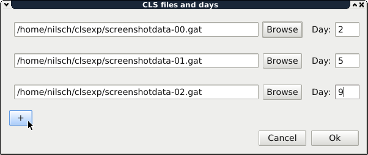
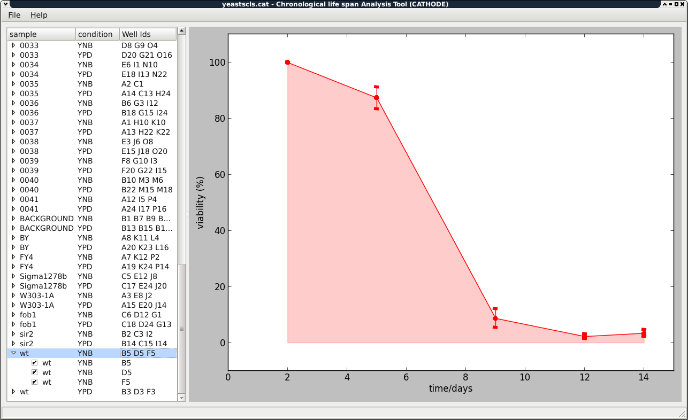

In this tutorial we describe how to get started with the Chronological life span Analysis Tool for High-throughput Optical Density Experiments (CATHODE). Make sure you have first read the Getting started chapter of GATHODE.
When performing a chronological life span analysis, each plate corresponds to one age-point, and all plates must have exactly the same layout of samples/conditions per well.
After finishing all your experiment with the plate reader, process every plate as explained in the GATHODE documentation.
Once this is done, the files saved by GATHODE are ready for import into CATHODE. Create a new project by choosing File ‣ New. A selection window will pop up that allows to select the files and assign an age-point to them.
When the files are imported, you will see the list of samples that you are already familiar with from GATHODE, and the main figure will show the viability graph.
As with GATHODE, you can save the figures in PDF format (File ‣ Export figure) and a table in CSV (comma-separated values) format including the viabilities and the survival integral (File ‣ Export properties).
You can save the CLS data from the menu by choosing File ‣ Save as. Note though that the GATHODE plate files themselves are not included in the saved file, only their locations are stored. You should therefore not move the GATHODE files to another directory, as CLS will then not be able to locate them. But you can move the CLS file together with the accompanying GATHODE files to another directory, as long as the relative positions in the directory tree stay the same.
You may change the underlying GATHODE files of a CLS analysis and then reload these by selecting File ‣ Reload.
{kind=link}
{kind=link}